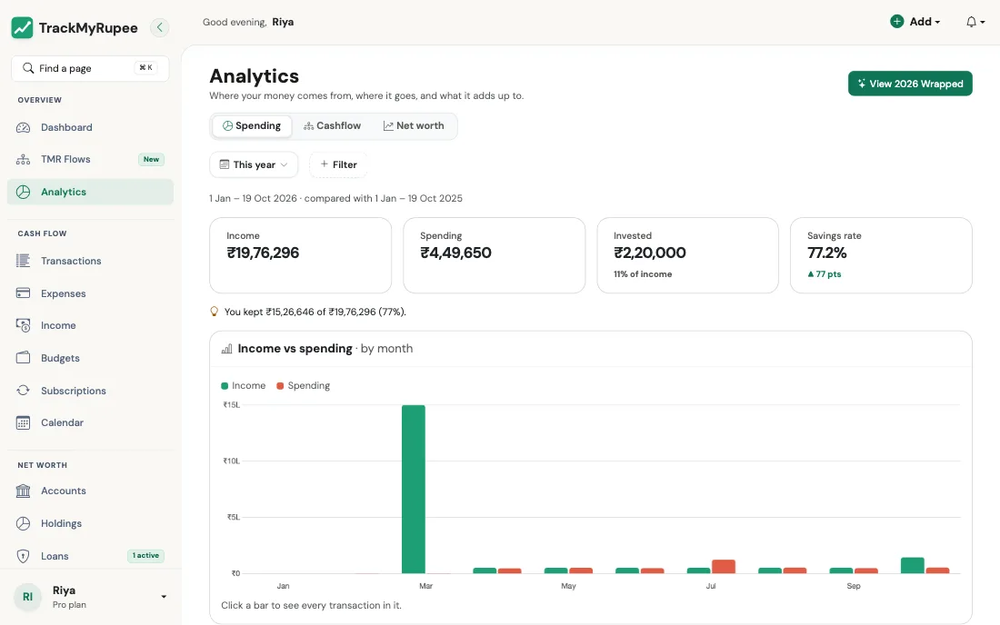
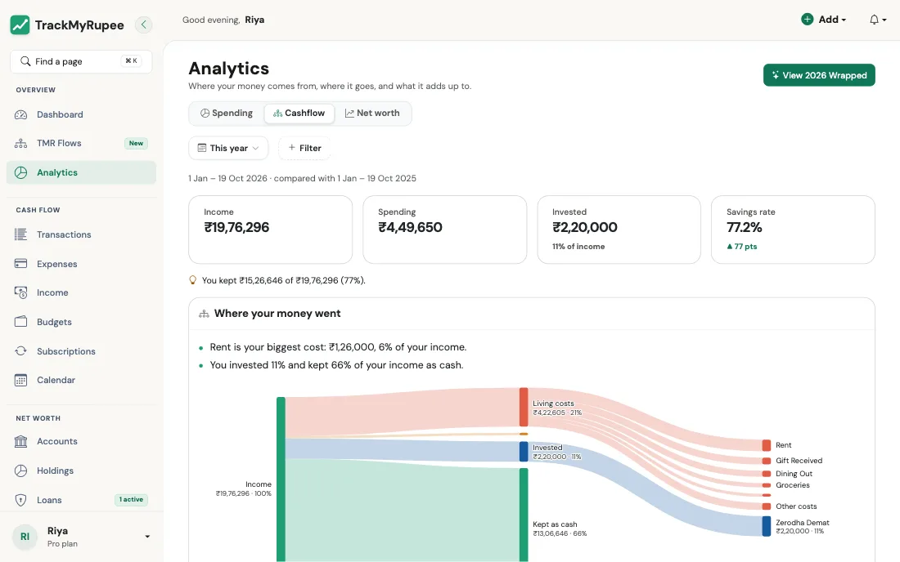
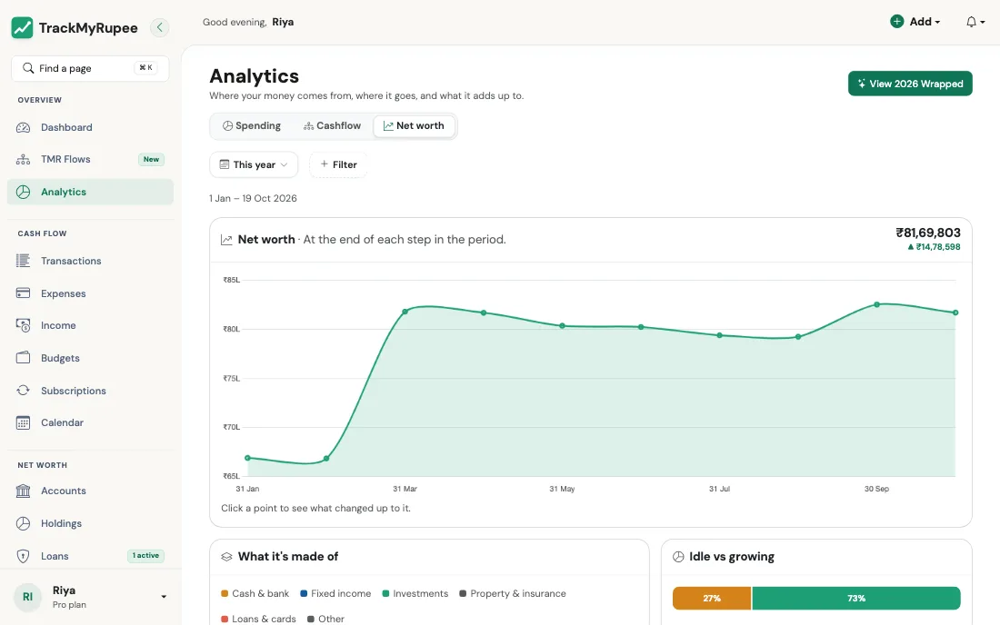

Analytics: खर्च, कैशफ़्लो और कुल संपत्ति¶
अपनी बचत दर, पैसा कहाँ जाता है और आपकी कुल संपत्ति कैसे बदलती है, यह समझें। हर सारांश से आप उसके पीछे के लेन-देन तक पहुँच सकते हैं।
1. Analytics खोलना¶
डेस्कटॉप पर Sidebar → Analytics पर जाएं, या मोबाइल पर More → Analytics पर जाएं (URL: /analytics/)। पृष्ठ पर तीन टैब हैं: Spending (खर्च), Cashflow (कैशफ़्लो) और Net worth (कुल संपत्ति)। अवधि या फ़िल्टर बदलने पर चुना हुआ टैब वही रहता है।

अवधि और फ़िल्टर चुनें¶
Analytics में वही फ़िल्टर बार है जो Expenses, Income और Transactions में है:
- Time period: इस महीने (या आपका सैलरी साइकिल), पिछला महीना, पिछले 3 महीने, पिछले 6 महीने, इस वर्ष, सभी समय, या कोई भी Custom range। पृष्ठ इस वर्ष पर खुलता है।
- + Filter: Category या Account से सीमित करें, या Capital events चालू करें ताकि औसत से बाहर रखे गए एकमुश्त खर्च भी गिने जाएं।
चार्ट आपकी चुनी अवधि के अनुसार बदलते हैं: 35 दिन तक हर दिन का एक बार, लगभग 6 महीने तक हर सप्ताह, लगभग 2 वर्ष तक हर महीना, और उससे अधिक पर हर तिमाही।
Category फ़िल्टर केवल खर्च को सीमित करता है। आय और बचत जैसी हैं वैसी रहती हैं, और ऋण का ब्याज बाहर हो जाता है क्योंकि उसकी कोई श्रेणी नहीं होती।
तुलना¶
हर योग की तुलना पहले की किसी अवधि से होती है, ताकि दिखे कि वह बढ़ा या घटा:
| आपने चुना | तुलना किससे होती है |
|---|---|
| इस वर्ष | पिछले वर्ष की उन्हीं तारीखों से |
| इस महीने (या साइकिल) | पिछले महीने (या पिछले साइकिल) के उतने ही दिनों से |
| अन्य कुछ भी | उससे ठीक पहले की उतनी ही लंबी अवधि से |
| सभी समय | किसी से नहीं |
यदि तुलना की अवधि में कुछ दर्ज नहीं था, तो सपाट रेखा दिखाने के बजाय तुलना छोड़ दी जाती है।
किसी भी चार्ट पर क्लिक करके लेन-देन देखें¶
हर टाइल, बार, पंक्ति और ब्लॉक All Transactions खोलता है, ठीक उन्हीं दिनों और फ़िल्टर के साथ जो वह दिखाता है। कंप्यूटर पर चार्ट पर एक क्लिक से वह खुलता है और माउस ले जाने पर आंकड़े दिखते हैं। फ़ोन पर चार्ट को टैप करें, आंकड़ों के साथ View transactions बटन दिखेगा, फिर उस बटन को टैप करें।
2. Spending टैब¶
- Income vs spending: हर दिन, सप्ताह, महीने या तिमाही के लिए बारों की जोड़ी। छोटी अवधि में केवल खर्च दिखता है, क्योंकि आय एकमुश्त आती है (जैसे मासिक वेतन) और अचानक उछाल जैसी दिखती।
- Where it went: आपकी श्रेणियाँ, सबसे बड़ी पहले, हर एक का खर्च में हिस्सा और तुलना की अवधि से बदलाव। हर पंक्ति उस श्रेणी के लेन-देन खोलती है।
- Spending as it adds up: आपका दिन-दर-दिन जमा होता खर्च, तुलना की अवधि के साथ दिन के अनुसार मिलाकर। इस महीने के लिए बिंदीदार रेखा आपके बजट को पूरे महीने में बराबर बाँटकर दिखाती है।
- Biggest categories over time (पहले से खुला): आपकी शीर्ष पाँच श्रेणियों के स्टैक्ड बार, ताकि जो श्रेणी चुपचाप बढ़ रही है वह दिख जाए।
3. Cashflow टैब¶

- Where your money went: एक प्रवाह आरेख। आपकी आय रोज़मर्रा के खर्च, ऋण के ब्याज, निवेश और नकद के रूप में बचाई राशि में बँटती है। रोज़मर्रा का खर्च आपकी सबसे बड़ी श्रेणियों में, और निवेश उन खातों में बँटता है जहाँ पैसा गया। यदि आपने कमाई से अधिक खर्च किया, तो अंतर Paid from savings के रूप में दिखता है। किसी ब्लॉक या प्रवाह पर क्लिक करके उसके लेन-देन देखें। नीचे एक छोटी सूची वही आंकड़े देती है, और कुछ सरल वाक्य बताते हैं कि क्या उभरकर आ रहा है।
- Health check: एक स्कोर की जगह चार संख्याएँ, हर एक के साथ बताया गया कि वह क्या मापती है:
| संख्या | यह क्या मापती है |
|---|---|
| Savings rate | आपने आय का कितना हिस्सा बचाया (20% या अधिक पर हरा) |
| Spending trend | आपका खर्च तुलना की अवधि की तुलना में (घटा तो हरा, +15% तक पीला, उससे अधिक पर लाल) |
| Emergency fund | आपका नकद और बैंक शेष, आपके औसत खर्च के कितने महीनों के बराबर (6 महीने या अधिक पर हरा) |
| Months in the black | कितने महीनों में आपने कमाई से कम खर्च किया (कम से कम दो महीनों की गतिविधि चाहिए) |
- This period against the one before: हर बार के लिए खर्च, तुलना की अवधि के बार के सामने।
4. Net worth टैब¶

- Net worth: अवधि के हर चरण के अंत में आपकी कुल संपत्ति, और अवधि में उसमें कितना बदलाव हुआ। हर बिंदु उस दिन के शेष दिखाता है (बाद के लेन-देन वापस घटाए जाते हैं), जमा पर ब्याज केवल उस दिन तक, होल्डिंग्स और संपत्ति उस दिन या उससे पहले के सबसे ताज़ा मूल्य पर, और ऋण उतने जितना तब बकाया था। किसी बिंदु पर क्लिक करके देखें कि वहाँ तक क्या बदला। चार्ट में अधिकतम 12 बिंदु बराबर दूरी पर दिखते हैं।
- What it's made of: वही बिंदु खाते के प्रकार के अनुसार बँटे: नकद और बैंक, फिक्स्ड इनकम, निवेश, संपत्ति और बीमा, और ऋण व कार्ड पर जो बकाया है (रेखा के नीचे)। Other वह पैसा है जो लक्ष्यों के लिए अलग रखा गया है और वे ऋण जो किसी खाते से जुड़े नहीं हैं।
- Idle vs growing: आज आपका रखा हुआ पैसा बैंक खातों और निवेशों में कैसे बँटा है। इसमें सकारात्मक शेष वाले खाते गिने जाते हैं (जमा और होल्डिंग्स उनके वर्तमान मूल्य पर); क्रेडिट कार्ड, ऋण और ओवरड्रॉन खाते देनदारी हैं, इसलिए छोड़ दिए जाते हैं।
- Categories creeping up: वे श्रेणियाँ जिनका मासिक खर्च लगातार तीन पूरे महीनों तक बढ़ा। यह आपकी चुनी अवधि से स्वतंत्र, हमेशा पिछले तीन पूरे महीने देखता है।
कितना पीछे तक देख सकते हैं यह आपके प्लान पर निर्भर है: Free में पिछले 2 महीने, Plus में 6, और Pro में पूरा इतिहास। लंबी अवधि चुनने पर पुराने महीनों की जगह अपग्रेड का संदेश दिखता है।
5. बचत दर की गणना कैसे होती है¶
TrackMyRupee में जहाँ भी बचत दर दिखती है वहाँ यही सूत्र लगता है: Dashboard का मुख्य आंकड़ा, Analytics की टाइलें और Health check, Transactions पृष्ठ की Net Remaining टाइल, और मासिक ईमेल रिपोर्ट। वे केवल इसलिए अलग हो सकते हैं कि अवधि या फ़िल्टर अलग हैं, गणना के तरीके के कारण कभी नहीं।
बचत = आय − खर्च − ऋण का ब्याज − वे Capital Events जो औसत में गिने जाते हैं
बचत दर = बचत ÷ (आय − Cashback और Refund आय) × 100
इसके पीछे कुछ नियम हैं:
- ऋण का मूलधन खर्च नहीं है। EMI भरने पर केवल ब्याज वाला हिस्सा खर्च गिना जाता है। मूलधन उधार लिया पैसा लौटाना है, इसलिए वह आपकी बचत नहीं घटाता।
- Capital Events तभी गिने जाते हैं जब आप चाहें। Capital Event डिफ़ॉल्ट रूप से बाहर रहता है (उसकी Exclude from Averages & Trends सेटिंग चालू है), ताकि एक बड़ी खरीद पूरा महीना न बिगाड़े। इवेंट पर यह सेटिंग बंद करने पर वह खर्च गिना जाता है। Analytics का Capital events फ़िल्टर बाहर रखे गए इवेंट्स को अस्थायी रूप से जोड़ देता है।
- Cashback और Refund आय हैं, पर आधार का हिस्सा नहीं। Cashback and Rewards और Refund / Reimbursement आय आपकी बचत में जुड़ती है (वह पैसा सचमुच आपका है), पर जिस राशि से दर नापी जाती है उसमें शामिल नहीं होती। दर आपकी कमाई के सापेक्ष नापी जाती है, इसलिए रिफ़ंड उसे केवल सुधार सकता है, घटा नहीं सकता।
- आय नहीं तो दर नहीं। यदि आधार शून्य या उससे कम है, तो भ्रामक संख्या की जगह दर 0 दिखती है। कमाई से अधिक खर्च करने पर दर ऋणात्मक आती है।
- सब कुछ आपकी अपनी मुद्रा में है। विदेशी राशियाँ सहेजते समय बदल दी जाती हैं।
एक उदाहरण
एक महीने में अनन्या का वेतन ₹50,000 है और ₹1,000 कैशबैक मिलता है। वह ₹20,000 सामान्य खर्च करती है और ₹8,000 की EMI भरती है, जिसमें ₹2,000 ब्याज है।
- बचत = 51,000 − 20,000 − 2,000 = ₹29,000 (₹6,000 मूलधन नहीं गिना गया)
- आधार = 51,000 − 1,000 = 50,000
- बचत दर = 29,000 ÷ 50,000 = 58%
6. Year in Review ("Wrapped")¶
Plus और Pro पर, Analytics पृष्ठ का View /year-in-review/<year>/)। कार्ड बदलने के लिए टैप या स्वाइप करें, या कंप्यूटर पर तीर और कीबोर्ड का उपयोग करें। चालू वर्ष आज तक गिना जाता है। Free खातों को मूल्य निर्धारण पृष्ठ दिखता है।
Spending story केवल इस पर बनती है कि आपने क्या खरीदा, आय पर कभी नहीं, इसलिए साझा करने के लिए यही है:
- आपकी धन-शैली: आपके खर्च के तरीके का एक नाम और उसकी एक पंक्ति की वजह (जैसे "वीकेंड खर्चीला: आपका 51% खर्च शनिवार या रविवार को हुआ")। यह आपके अपने डेटा पर तय नियमों से आती है, इसलिए एक ही साल हमेशा एक ही नतीजा देता है।
- सब कुछ कहाँ गया: आपकी शीर्ष तीन श्रेणियाँ और कुल खर्च में उनका हिस्सा।
- मज़ेदार तथ्य: सप्ताह का आपका सबसे व्यस्त दिन, सबसे लंबी बिना-खर्च लकीर, सबसे ज़्यादा जाया गया ठिकाना और दर्ज खरीदारियों की संख्या।
- क्या बदला: पिछले साल की तुलना में आपकी सबसे बड़ी श्रेणी-बदलाव, प्रतिशत में।
- उपलब्धियाँ और लकीरें: दर्ज किए दिन, लगातार प्रविष्टि वाले सप्ताह और पूरे हुए लक्ष्य।
Money story में आय पर आधारित कार्ड हैं (आपकी बचत दर और कुल संपत्ति में बदलाव)। उन्हें अलग रखा गया है और ताले के निशान से चिह्नित किया गया है, क्योंकि वे आय पर आधारित आँकड़े दिखाते हैं।
साझा करना¶
अपने कार्ड चुनने के लिए Share टैप करें। दो स्विच तय करते हैं कि क्या बाहर जाएगा:
- रुपये की राशियाँ छिपाएँ (डिफ़ॉल्ट रूप से चालू) हर रुपये के मान को प्रतिशत या क्रम से बदल देता है, ताकि आप एक भी राशि बताए बिना कहानी साझा कर सकें।
- Money story शामिल करें (डिफ़ॉल्ट रूप से बंद) आय पर आधारित कार्ड जोड़ता है।
आप अपना पहला नाम भी जोड़ सकते हैं। Share… आपके फ़ोन की शेयर शीट (WhatsApp, Instagram Stories आदि) खोलता है; कंप्यूटर पर यह तस्वीरें डाउनलोड करता है। तस्वीरें आपके डिवाइस पर बनती हैं और कुछ भी अपलोड नहीं होता।
7. सभी अंतर्दृष्टि पर एक महत्वपूर्ण नोट¶
इन पृष्ठों के निष्कर्ष, Health check और हर चार्ट आपके अपने ऐतिहासिक डेटा के वर्णनात्मक सारांश हैं। वे दिखाते हैं कि आपके रिकॉर्ड में क्या हुआ है।
वे वित्तीय सलाह नहीं हैं और भविष्य की भविष्यवाणी नहीं करते। इन्हें अपने निर्णयों के लिए डेटा-आधारित संकेत की तरह उपयोग करें।
वास्तविक उपयोग का उदाहरण
निशा व्यक्तिगत ऋण के लिए आवेदन करने पर विचार कर रही है और पहले अपनी वित्तीय स्थिति समझना चाहती है। वह Analytics खोलकर अवधि पिछले 6 महीने चुनती है। Spending टैब उसकी बचत दर 6 प्रतिशत दिखाता है, जो पिछले छह महीनों के 14 प्रतिशत से कम है। Cashflow टैब पर Dining Out उसकी दूसरी सबसे बड़ी लागत है और पहले की अवधि से ₹9,000 बढ़ी है, तो वह उस पर क्लिक करके पीछे के सभी रेस्तरां लेन-देन देखती है। Net worth टैब पर Idle vs growing दिखाता है कि ₹1.8 लाख सेविंग्स अकाउंट में पड़े हैं। वह Internal Transfer से ₹80,000 अपने म्यूचुअल फंड खाते में भेजती है। दो महीने बाद उसकी बचत दर 22 प्रतिशत है और Emergency fund 4.5 महीने दिखता है, जिससे ऋणदाता के पास जाने से पहले उसकी तस्वीर साफ़ है।